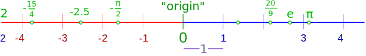
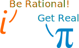
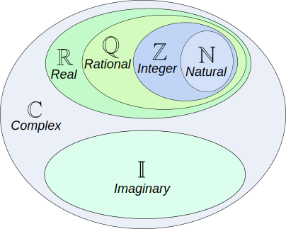

Common Number Sets
There are sets of numbers that are used so often they have special names and symbols:
| Symbol | Description | |
|---|---|---|
|
Natural Numbers The whole numbers from 1 upwards. (Or from 0 upwards in some fields of mathematics). Read More -> The set is {1,2,3,...} or {0,1,2,3,...} |
||
|
Integers The whole numbers, {1,2,3,...} negative whole numbers {..., -3,-2,-1} and zero {0}. So the set is {..., -3, -2, -1, 0, 1, 2, 3, ...} (Z is from the German "Zahlen" meaning numbers, because I is used for the set of imaginary numbers). Read More -> |
||
|
Rational Numbers The numbers you can make by dividing one integer by another (but not dividing by zero). In other words fractions. Read More -> Q is for "quotient" (because R is used for the set of real numbers). Examples: 3/2 (=1.5), 8/4 (=2), 136/100 (=1.36), -1/1000 (=-0.001) (Q is from the Italian "Quoziente" meaning Quotient, the result of dividing one number by another.) |
||
|
Irrational Numbers Any real number that is not a Rational Number. Read More -> |
||
|
Algebraic Numbers Any number that is a solution to a polynomial equation with rational coefficients. Includes all Rational Numbers, and some Irrational Numbers. Read More -> |
||
|
Transcendental Numbers Any number that is not an Algebraic Number Examples of transcendental numbers include π and e. Read More -> |
||
|
|
Real Numbers Any value on the number line: 
Also see Real Number Properties They are called "Real" numbers because they are not Imaginary Numbers. Read More -> |
|
|
Imaginary Numbers Numbers that when squared give a negative result. If you square a real number you always get a positive, or zero, result. For example 2×2=4, and (-2)×(-2)=4 also, so "imaginary" numbers can seem impossible, but they are still useful! Examples: √(-9) (=3i), 6i, -5.2i The "unit" imaginary numbers is √(-1) (the square root of minus one), and its symbol is i, or sometimes j. i2 = -1 |
||
|
Complex Numbers A combination of a real and an imaginary number in the form a + bi, where a and b are real, and i is imaginary. The values a and b can be zero, so the set of real numbers and the set of imaginary numbers are subsets of the set of complex numbers. Examples: 1 + i, 2 - 6i, -5.2i, 4 |
||

|  |
IllustrationNatural numbers are a subset of Integers Integers are a subset of Rational Numbers Rational Numbers are a subset of the Real Numbers Combinations of Real and Imaginary numbers make up the Complex Numbers. |
Number Sets In Use
Here are some algebraic equations, and the number set needed to solve them:
| Equation | Solution | Number Set | Symbol |
|---|---|---|---|
| x − 3 = 0 | x = 3 | Natural Numbers | |
| x + 7 = 0 | x = −7 | Integers | |
| 4x − 1 = 0 | x = ¼ | Rational Numbers | |
| x2 − 2 = 0 | x = ±√2 | Real Numbers | |
| x2 + 1 = 0 | x = ±√(−1) | Complex Numbers |
Other Sets
We can take an existing set symbol and place in the top right corner:
- a little + to mean positive, or
- a little * to mean non zero, like this:
| Set of positive integers {1, 2, 3, ...} | ||
| Set of nonzero integers {..., -3, -2, -1, 1, 2, 3, ...} | ||
| etc |
And we can always use set-builder notation.